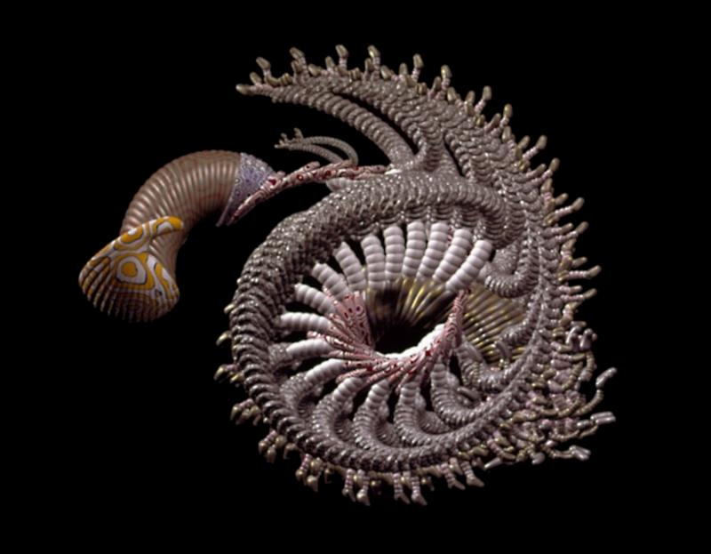

Facultades y
dependencias
/ Facultad de Ingeniería / Escuela de Ingeniería de Sistemas y
Computación
Laboratorio de computación evolutiva y vida artificial
Visión

Contacto
Escuela de Ingeniería de Sistemas y Computación, Facultad de Ingeniería.
Teléfono (57)(2) 3315273
edificio 331 espacio 2066
c.e: angel.garcia@correounivalle.edu.co
Actualizado a: 15/07/2013
| XHTML Estándar | CSS Estándar |